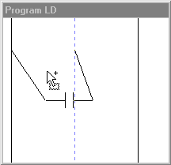
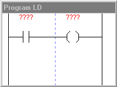

Opis rozkazów
Styki
Styk zwierny
Styk rozwierny
Cewki
Cewka zwierna
Cewka rozwierna
Cewka zbocze narastaj¹ce
Cewka zbocze opadaj¹ce
Cewka S
Cewka R
Liczniki
Licznik UPCTR
Licznik DNCTR
Timery
Timer ONDTR
Timer OFDT
Timer TMR
Operacje arytmetyczne
Dodawanie ADD
Odejmowanie SUB
Mno¿enie MUL
Dzielenie DIV
Reszta z dzielenia MOD
Pierwiastek SQRT
Relacje
Równy EQ
Nierówny NE
Wiêkszy GT
Wiêkszy równy GE
Mniejszy LT
Mniejszy równy LE
Zakres RANGE
Opis lekcji
Lekcja 1 Wprowadzenie
Pierwszy program
Zasada dzia³ania
Organizacja pamiêci
Obs³uga programu
Pierwsze próby
Lekcja 2 Basen
Lekcja 3 Oran¿ada
Lekcja 4 Pralka
Lekcja 5 Winda
Lekcja 1
Pierwszy programNapiszmy nasz pierwszy program! Dziêki niemu bêdziemy mogli sterowaæ zapalaniem pierwszej z ¿arówek za pomoc¹ pierwszego prze³¹cznika. Oto instrukcja krok po kroku:
- W oknie z elementami wybierz kategoriê "Styki"
- Wciœnij lewy klawisz na myszy na elemencie "styk zwierny"
- Wci¹¿ trzymaj¹c lewy klawisz przeci¹gnij kursor myszki nad okno "Program LD", z lewej strony niebieskiej linii.
 - PuϾ lewy klawisz myszy, a element "wskoczy" na swoje miejsce w programie.
- Teraz wybierz kategoriê "Cewki"
- Jak poprzednio wciœnij lewy klawisz myszy, tym razem na elemencie "cewka zwierna"
- Przeci¹gnij go nad okno "Program LD", tym razem z prawej strony niebieskiej linii.
- Puœæ lewy klawisz myszy, a element znów "wskoczy" na swoje miejsce.

To jest ju¿ zal¹¿ek naszego pierwszego programu. Czerwone znaki zapytania mówi¹ nam, ¿e jeszcze nie ustawiliœmy parametrów danego elementu. Zrobimy to teraz. W tym celu dwukrotnie kliknij na elemencie z lewej. Pojawi siê okienko:
W górnej czêœci pokazany jest symbol zmienianego elementu. Ni¿ej znajduj¹ siê wypisane wszystkie parametry elementu (w tym przypadku jest to tylko "Adres bazowy"). Na samym dole znajduje siê przycisk zatwierdzaj¹cy OK. Chcemy ustawiæ "Adres bazowy", wiêc klikamy na przycisku "Zmieñ" z prawej strony napisu. Pojawi siê jeszcze jedno okno:

Tutaj wybieramy, na co ma reagowaæ nasz styk zwierny. Mo¿emy to zrobiæ na dwa sposoby. Pierwszy, trudniejszy, polega na wybraniu typu pamiêci (Wejœcie cyfrowe I) oraz adresu w pamiêci (Numer wejœcia : 0). Drugi, ³atwiejszy, polega na wybraniu z rozwijanej listy obok napisu "Wybór gotowego adresu :" opcji BISTAB_1, czyli pierwszy prze³¹cznik bistabilny.
Klikamy OK. Na symbolu elementu widaæ, ¿e zniknê³y znaki zapytania, a pojawi³ siê napis BISTAB_1, czyli wybrane przez nas wejœcie sterownika. Klikamy jeszcze raz OK. Ta sama zmiana zasz³a równie¿ w naszym pierwszym programie.
Teraz analogicznie ustaw cewkê zwiern¹ (nasz drugi element), aby pod³¹czona by³a do pierwszej ¿ó³tej ¿arówki (¯Ó£TA_1).
W ten sposób napisa³eœ swój pierwszy program! Ale jak sprawdziæ, czy dzia³a? Wystarczy uruchomiæ pracê sterownika. Wybierz z menu "Praca PLC" opcjê "Start", albo po prostu wciœnij przycisk na belce narzêdziowej. Teraz, gdy sterownik pracuje, spróbuj prze³¹czaæ w oknie "Uk³ad wykonawczy" pierwszy z lewej prze³¹cznik klikaj¹c na nim. Jeœli wszystko wykona³eœ prawid³owo, zmianom pozycji prze³¹cznika powinno towarzyszyæ zapalanie i gaszenie siê pierwszej z lewej ¿ó³tej ¿arówki. Jeœli coœ nie dzia³a nie martw siê! Spróbuj wszystko wykonaæ od pocz¹tku.
Robi³eœ wszystko jak kaza³em, ale wci¹¿ nie wiesz jak dzia³a program. Wykorzystaliœmy w nim dwa elementy: styk zwierny i cewkê zwiern¹. Na nasz program mo¿esz patrzeæ jak na schemat elektryczny. "Pr¹d" p³ynie z lewa na prawo. Najpierw natrafia na styk zwierny. Jeœli wejœcie sterownika wybrane dla tego styku (w naszym przypadku jest to BISTAB_1) znajduje siê w stanie wysokim, to styk bêdzie "pr¹d" przewodzi³. Z kolei cewka zwierna, gdy jest zasilana, to ustawia w stan wysoki wybrane wyjœcie sterownika (¯Ó£TA_1). Jeœli pr¹d do niej nie dop³ywa, to ustawia wybrane wyjœcie w stan niski. W naszym przypadku wiêc za³¹czenie prze³¹cznika powoduje za³aczenie ¿arówki. Roz³¹czenie prze³¹cznika, powoduje wy³aczenie ¿arówki.
W nastêpnym etapie dowiesz siê w jaki sposób tak naprawdê dzia³a sterownik i jak ma zorganizowan¹ pamiêæ.
Kliknij tutaj aby przejϾ dalej.